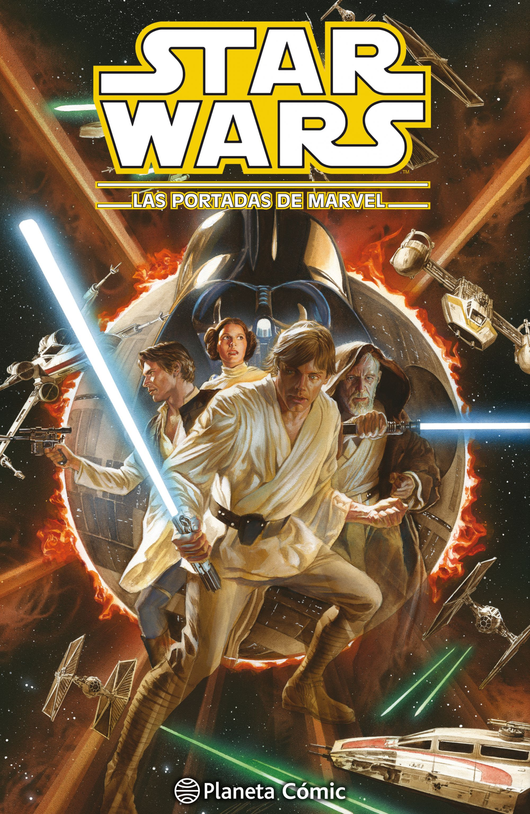

Star Wars - Episodio IV
Es un período de guerra civil. Las naves espaciales rebeldes, que atacan desde una base oculta, han ganado su primera victoria contra el malvado imperio galáctico. Durante la batalla, espías rebeldes consiguieron robar los planos secretos del arma más reciente del imperio, la Estrella de la Muerte, una estación espacial blindada con el poder suficiente para destruir un planeta entero.
Perseguida por siniestros agentes del imperio, la Princesa Leia se dispone a regresar a su hogar a bordo de su nave, custodiando los planos robados que pueden salvar su pueblo y restablecer la libertad en la galaxia. Sin embargo la transmisión es interceptada por el Imperio Galáctico, dando alcance a la Tantive IV.
De forma inmediata, las tropas imperiales toman el mando de la Tantive IV, con Darth Vader a la cabeza. Durante el asalto, capturan a la princesa, quien antes logra depositar los planos robados y una grabación holográfica dentro de un androide denominado R2-D2, el cual habrá de escapar a bordo de una pequeña nave con destino al desértico Tatooine, junto con el androide C-3PO.
Star Wars - Episodio V
La tripulación decide partir hacia Bespin, pasando desapercibidos al radar del destructor estelar entre sus desperdicios, pero Boba Fett, avispado cazarecompensas logra percatarse y decide seguirles. Una vez en Bespin, se reúnen con Lando Calrissian, viejo amigo de Han, para reparar el propulsor, allí son recibidos con grandes lujos.
Mientras tanto, Luke, acompañado por R2-D2, arriba a Dagobah mediante un aterrizaje de emergencia. Establece un campamento, pero es sorprendido por una pequeña y molesta criatura verde que le promete guiarlo hasta la casa de Yoda. Luke le sigue y descubre que, para su sorpresa, él era Yoda. Yoda es reacio a entrenar a Luke en las artes de "La Fuerza", pero Obi-Wan intercede apelando que el también era un joven con la cabeza distraída cuando fue entrenado, a lo que Yoda no puede negarse y comienza a instruir a Luke en el conocimiento de la Fuerza.
Yoda le da a Luke grandes lecciones de sabiduría, como que el tamaño no importa (cabe destacar que Yoda mide 0,66 metros), el origen de la Fuerza y la diferencia entre el lado oscuro y el luminoso. Durante el entrenamiento, Yoda le enseña a su joven aprendiz cómo hacer levitar, a través de la Fuerza, la nave atascada en el pantano por el aterrizaje. Durante una meditación, Luke logra ver el futuro: Leia y Han sufriendo en una ciudad en las nubes. Habiendo visto eso, Luke decide ir a rescatarlos, ignorando las advertencias de Yoda y de Obi-Wan (quien vuelve al mundo en forma de espíritu). Durante este periodo de entrenamiento, Yoda insta a Luke a entrar en la cueva de las sombras, donde no necesitará armas y donde se encontrará con el reverso tenebroso de la fuerza. Una vez allí Luke se encuentra con la visión de Darth Vader y ambos se enfrentan, derrotando Luke a Vader cortandole la cabeza. Cuando la cabeza de Darth Vader cae al suelo el casco se rompe, mostrando el rostro de Luke.